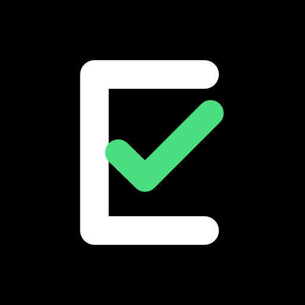

ExamMePrivacy Policy
ExamMe is an AI exam app for teachers, created and run by Taryn Maloney ("we", "us"). Teachers make exams in the app, and students take them in a web browser. This policy explains what information ExamMe uses, where it goes, how long it's kept, and how to delete it.
In short: ExamMe has no accounts and no ads, and data is never sold. To write exams, the app sends the teacher's topic and notes to the ExamMe service, which uses AI from Groq and Cloudflare. When a teacher shares an exam, students give only a first name, and we keep only that name and which questions they got right, for 90 days. Teachers can delete an exam and its results at any time.
No accounts
ExamMe doesn't ask teachers or students to sign up or sign in. It doesn't collect email addresses, contacts, location, photos or advertising IDs. The only name it collects is the first name a student types when handing in a class exam.
Class exams (teachers and students)
- To write a class exam: the app sends the topic, class level, number of questions, difficulty and any notes the teacher pastes in. Please don't paste notes containing students' names or other personal information.
- When a teacher shares an exam: the approved questions and title are saved on the ExamMe service so students can open them by link, QR code or code. A scrambled code for the teacher's phone is kept to count free shared exams. The teacher's private results key is kept only as a scrambled hash.
- When a student hands in: only the first name they type (up to two words) and which questions they got right or wrong are saved. Their actual choices aren't kept. The student page uses no cookies, outside scripts or analytics.
- Who can see results: only someone with the teacher's private results link, which stays on the teacher's phone.
- Purchases: the one-time unlock is sold by Google Play (or Apple). We receive a purchase token to confirm the unlock and keep only a scrambled hash of it. We never see payment details.
What stays on your phone
Your subjects, topics, exams, answers, scores and progress are stored in the app on your phone. We don't keep a copy of this history, and it isn't backed up or synced by ExamMe.
What is sent to the ExamMe service
ExamMe uses AI to write lessons and exams and to mark written answers. To do this, the app sends the following to the ExamMe service:
- To write a lesson and an exam: the subject, topics, exam settings, and the text of earlier questions, including ones you got wrong.
- To mark written answers: the questions, the model answers, and what you wrote.
- A random ID for this install of the app, used only for the daily limit.
- If you report a question as wrong: the subject, topic, question, answer and explanation. Reports don't include your written answers.
- When ExamMe is first opened on a phone: the platform (Android, iPhone or web) and the app version. No ID is sent; this only counts installs.
- If something goes wrong in the app: a short error message, the platform and the app version, so the problem can be fixed. ExamMe removes email addresses, web links and long numbers from the message. It doesn't add your study content to reports, but an error message can sometimes contain a little of the text the app was handling.
Please don't type personal information into subject names, topics or written answers. Everything is sent over an encrypted connection (HTTPS).
Service providers
These providers process data on our behalf to run ExamMe:
| Provider | What for | What they receive |
|---|---|---|
| Cloudflare | Runs the ExamMe service. Cloudflare Workers AI also checks subjects, lessons and questions for unsafe content, and writes exams if Groq isn't available. | The requests described above, and your network address while handling them |
| Groq (GroqCloud) | Writes lessons and exams, and marks written answers | Subjects, topics, exam settings, questions and written answers. Groq's terms say it doesn't use this content to train AI models. It may keep it for up to 30 days to fix problems or investigate abuse. |
Cloudflare states that it doesn't use Workers AI content to train AI models. You can read how Groq handles data, Cloudflare's data usage terms and Cloudflare's privacy policy. We don't share your data with anyone else, except where the law requires it.
How we use it
- To write lessons and exams on the subjects and topics you choose.
- To mark written answers and explain the results.
- To keep the free service fair, with a daily limit per install and per network.
- To review questions you report as wrong and improve the app.
- To count installs and how much ExamMe is used each day, and to find and fix errors.
We don't use your information for advertising. The app has no third-party analytics or advertising trackers; the ExamMe service keeps only what this page describes.
How long it's kept
- Your study history (from practising a subject yourself) stays on your phone until you delete it or uninstall the app.
- Students' class exam results: deleted automatically after 90 days, or sooner if the teacher deletes the exam.
- Shared class exams: deleted automatically after one year, or sooner if the teacher deletes them.
- Exam and marking requests: the ExamMe service doesn't save them after replying. Groq may keep a copy for up to 30 days, as described above.
- Daily limit counts: kept for 2 days. They use scrambled versions of the install ID and of your network address, not the originals. First-open and error messages are limited per network in the same way.
- Reported questions: kept for up to 90 days so problems can be reviewed.
- Usage counts: daily totals of installs and of lessons, exams and marks written, and how many phones used ExamMe that day. Phones are counted with a scrambled code that changes every day; the install ID itself isn't stored with these counts. A daily cleanup deletes counts older than 30 days.
- Error reports: a daily cleanup deletes reports older than 30 days.
Deleting your data
- Teachers: delete a class exam in the app to remove it and every student's result from the ExamMe service straight away.
- Delete a subject or an exam in the app to remove it from your phone.
- Uninstall ExamMe to remove all of your study history. This can't be undone, because there is no copy anywhere else.
- To ask for a reported question to be deleted, or for any other privacy request, email us (below). We'll reply within 30 days.
Children
The ExamMe app is for teachers and other adults. Students of any age may take a class exam their teacher gives them. The student page asks only for a first name, which can be replaced with initials or a nickname, and collects nothing else. Teachers using ExamMe with children under 13 should follow their school's rules on consent for educational tools. To have a student's result deleted, the teacher can delete the exam in the app, or anyone can email us.
AI accuracy
Lessons, questions, explanations and marks are written by AI and can contain mistakes. Check anything important against a trusted source, especially for safety, medical or legal topics. If a question looks wrong, report it in the app.
Changes to this policy
If this policy changes, we'll update this page and the date at the top.
Contact
Questions or requests: tarynmaloney5@gmail.com